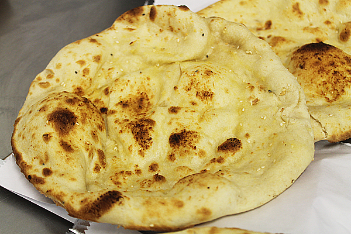

Peshawari Naan
How to make Peshawari Naan
Mughlai cuisine is incomplete without its amazing collection of bread and here is the recipe of Peshwari or Peshawri Naan, which is just incredible in taste and is a sweet bread that can be enjoyed with that Chicken Curry or Navratan Kofta that you have been craving for! Here's the easiest way to make this naan at home.
Ingredients
- 1 cup all purpose flour
- 1/3 cup water
- 1 teaspoon ghee
- salt as required
- 1 tablespoon pistachios
- 1 tablespoon grated coconut
- 1 tablespoon raisins
- Olive (1 oliv)
Recipe instructions (taken from the book)
- Mix the all-purpose flour, yeast and salt in a large bowl.
- Add in the yogurt and enough water to make a soft dough. Knead the dough on a lightly-floured plain surface until it becomes almost elastic for about 5 minutes.
- Then place the dough in the bowl and cover it with a kitchen towel. Set the bowl aside in a warm place for about 2 hours, until the dough has doubled in size.
- Next, prepare the filling of the naan by grinding together the coconut flakes, pistachios and raisins together in a food processor to get a coarse paste.
- Now, divide the doubled-up dough into six parts and roll each of the smaller dough into circles.
- Put a spoonful of the filling in the centre of each circle. Seal the circles by pulling the edges of them to enclose the filling in between.
- Place the naans on a baking tray, in a preheated 220 degree Celsius oven.
- Bake for about 8-10 minutes, until the naans are puffed up and have brown spots on them.
- Brush them with ghee before serving.